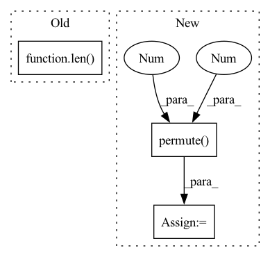

Pattern ID :28647
Before Change
pointsNet = []
pointsGT = []
for item in tqdm(range(len( dataset.image_ids) )):
if progress_bar != None:
progress_bar.progress(float(item+1)/len(dataset.image_ids))
After Change
reproTool = reproTools[dataset_name]
file_name = sample[-1][0]
imgs = imgs_orig.cuda().float().permute( 0,3,1 ,2 )
points3D_net = jarvisPredictor(imgs,
reproTool.cameraMatrices.cuda(),
reproTool.intrinsicMatrices.cuda(),In pattern: SUPERPATTERN
Frequency: 3
Non-data size: 3
Instances Fragment ID: 84542696
Project Name: jarvis-mocap/jarvis-hybridnet
Commit Name: 327b43a36cc8aa4995c6e50842b02f3577a1e241
Time: 2022-04-28
Author: jarvismocap@gmail.com
File Name: jarvis/analysis/analyze.py
M Class Name: AnonimousClass
N Class Name: AnonimousClass
M Method Name: analyze_validation_data(5)
N Method Name: analyze_validation_data(5)
M Parent Class:
N Parent Class:
M File Name: jarvis/analysis/analyze.py
N File Name: jarvis/analysis/analyze.py
M Start Line: 28
M End Line: 52
N Start Line: 22
N End Line: 82
Before Change
batch_acc = self.accuracy(pred_tags, true_tags)
epoch_loss += batch_loss.item()
epoch_acc += batch_acc.item()
return epoch_loss / len(iterator), epoch_acc / len( iterator)
def train(self, n_epochs):
for epoch in range(n_epochs):
start_time = time.time()After Change
true_tags = batch.tag.to(self.device)
pred_tags, batch_loss = self.model(words, chars, true_tags)
pred_tags_epoch += pred_tags
true_tags_epoch += [
[tag for tag in sent_tag if tag != self.data.tag_pad_idx]
for sent_tag in true_tags.permute(1 , 0 ) .tolist()
]
epoch_loss += batch_loss.item()
epoch_score = self.f1_positive(pred_tags_epoch, true_tags_epoch, full_report) Fragment ID: 84542724
Project Name: yoseflaw/nerindo
Commit Name: a70e55e7c0489cba1290ebd51512a9e878c6e0ed
Time: 2020-08-09
Author: yosefardhitowin@gmail.com
File Name: nerindo/trainer.py
M Class Name: Trainer
N Class Name: Trainer
M Method Name: evaluate(3)
N Method Name: evaluate(2)
M Parent Class: object
N Parent Class: object
M File Name: nerindo/trainer.py
N File Name: nerindo/trainer.py
M Start Line: 55
M End Line: 69
N Start Line: 85
N End Line: 104
Before Change
self.optimizer.step()
epoch_loss += batch_loss.item()
epoch_acc += batch_acc.item()
return epoch_loss / len(self.data.train_iter), epoch_acc / len( self.data.train_iter)
def evaluate(self, iterator):
epoch_loss = 0
epoch_acc = 0After Change
pred_tags_list, batch_loss = self.model(words, chars, true_tags)
pred_tags_epoch += pred_tags_list
// to calculate the loss and f1, we flatten true tags
true_tags_epoch += [
[tag for tag in sent_tag if tag != self.data.tag_pad_idx]
for sent_tag in true_tags.permute(1 , 0 ) .tolist()
]
batch_loss.backward()
self.optimizer.step() Fragment ID: 84542692
Project Name: yoseflaw/nerindo
Commit Name: a70e55e7c0489cba1290ebd51512a9e878c6e0ed
Time: 2020-08-09
Author: yosefardhitowin@gmail.com
File Name: nerindo/trainer.py
M Class Name: Trainer
N Class Name: Trainer
M Method Name: epoch(1)
N Method Name: epoch(1)
M Parent Class: object
N Parent Class: object
M File Name: nerindo/trainer.py
N File Name: nerindo/trainer.py
M Start Line: 31
M End Line: 51
N Start Line: 61
N End Line: 83